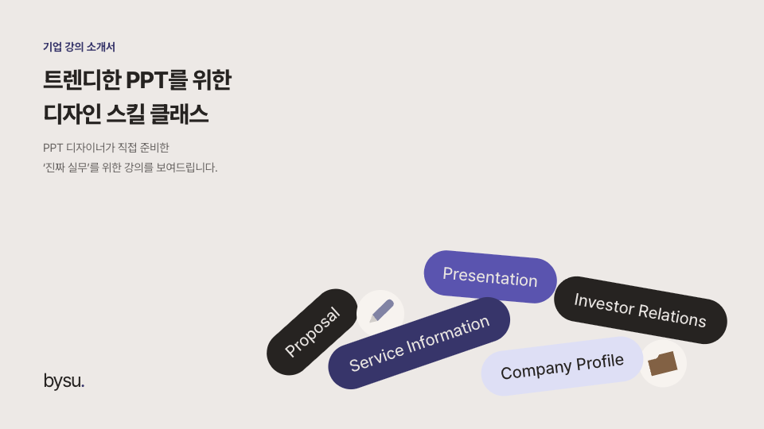
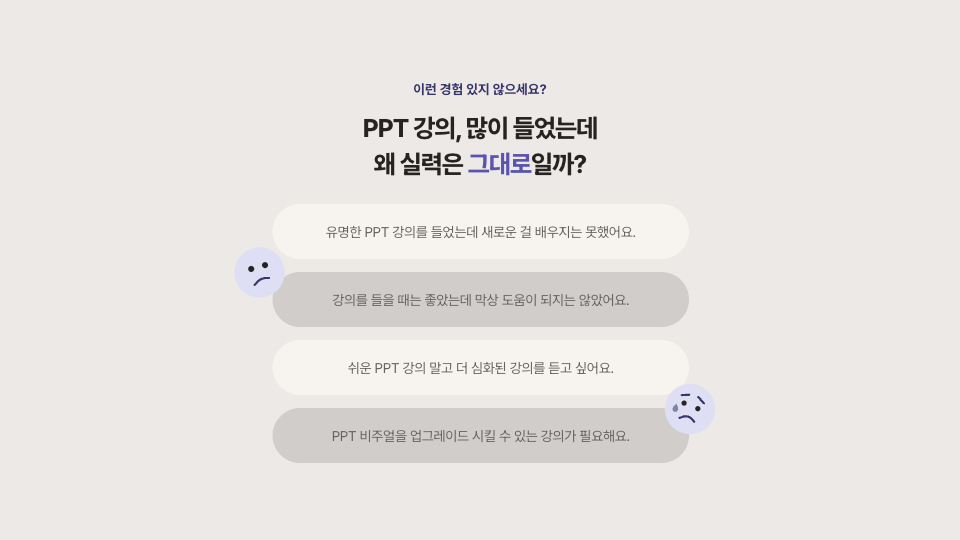
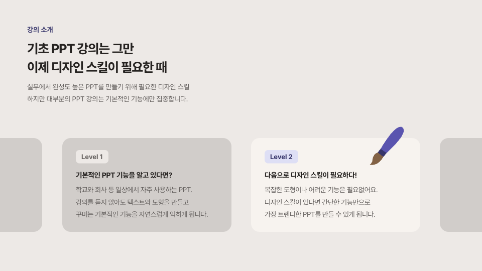
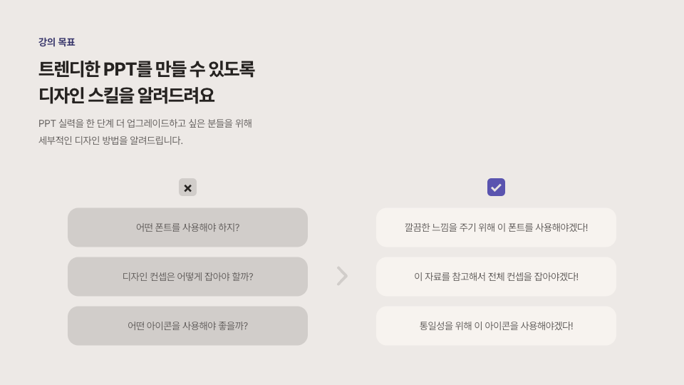
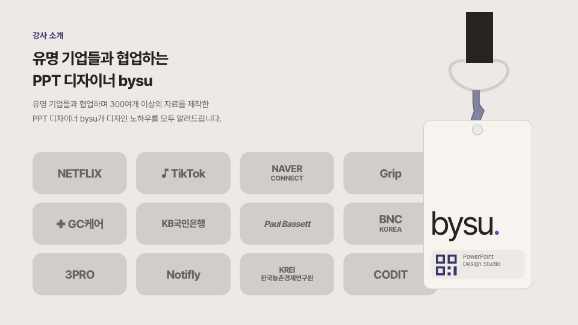
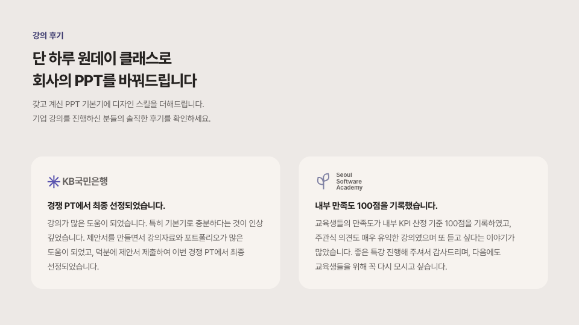
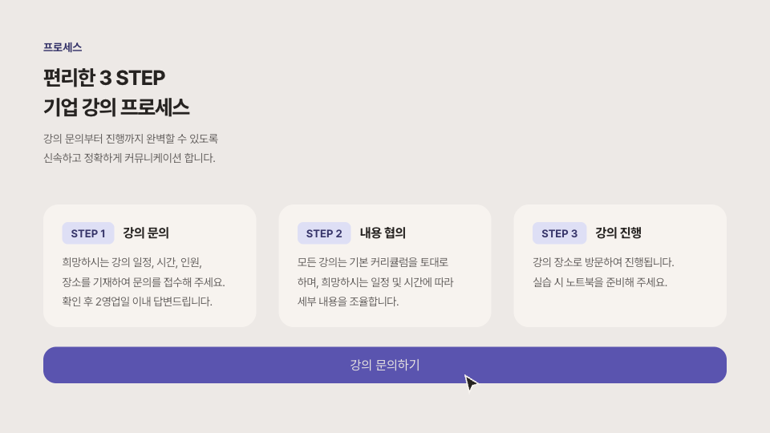

트렌디한 PPT를 위한 디자인 스킬 클래스
좌측 상단 타이틀과 우측 하단 기울어진 캡슐 타이포 5개 · 좌측 상단 두 줄 제목과 설명, 좌측 하단 bysu, 우측 하단 각도가 다른 5개 영문 캡슐 및 펜·폴더 아이콘.

PPT 강의, 많이 들었는데 왜 실력은 그대로일까?
중앙 제목 아래 둥근 의견 띠 4개와 양옆 표정 아이콘 · 중앙 두 줄 질문과 4개의 긴 캡슐 문장. 1·3번째 밝은 띠와 2·4번째 중립 띠를 교차하고 표정 아이콘 2개를 겹친다.

기초 PPT 강의는 그만, 이제 디자인 스킬이 필요한 때
좌측 상단 제목과 하단 두 레벨 카드·양끝 잘린 카드 · 상단 좌측 제목·설명, 하단 두 개의 큰 레벨 카드, 양 끝의 잘린 빈 카드 실루엣. 두 번째 카드 우측 위에 붓 SVG.

트렌디한 PPT를 만들 수 있도록 디자인 스킬을 알려드려요
좌측 상단 제목과 하단 3행 전후 비교 · 좌측 질문 3개와 우측 실행 문장 3개를 나란히 정렬. 상단 ×·체크 상태 및 중앙의 오른쪽 화살표.

유명 기업들과 협업하는 PPT 디자이너 bysu
좌측 제목·3×4 기업명 격자와 우측 대형 스트랩 명찰 · 좌측 상단 소개, 아래 12개 기업명 타일, 우측에 타일 일부를 덮는 대형 bysu 명찰. 원본 사진과 로고는 편집 가능한 단색 SVG·텍스트로 재구성.

단 하루 원데이 클래스로 회사의 PPT를 바꿔드립니다
좌측 상단 제목·설명과 하단 큰 후기 카드 2개 · 상단 좌측 두 줄 제목·설명, 하단 KB국민은행과 Seoul Software Academy의 후기 카드 2개. 원본 기업명·후기·100점 수치를 보존.

편리한 3 STEP 기업 강의 프로세스
좌측 상단 제목·하단 가로 3단계 카드와 전체 폭 문의 띠 · 공개 보드 우측이 잘린 유일한 프로세스 화면. 확인 가능한 제목·3개 단계·하단 문의 띠를 유지하며 보이지 않는 우측 여백을 대칭 복원하고 3단계 문구는 보이는 내용을 짧게 재작성.
원본 확인 범위: 원본 우측 약 13%가 공개 보드 밖에서 잘려 있습니다. 공개된 영역만 비교 이미지로 보존했으며, HTML의 우측 카드 폭·여백과 STEP 3 문구 일부는 확인 가능한 내용을 바탕으로 재구성했습니다. 누락 부분의 원문을 복원한 것은 아닙니다.